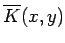

Inhalt Index DeskTop Bronstein

 Lineare Integralgleichungen Fredholmsche Integralgleichungen 2. Art Numerische Verfahren für Fredholmsche Integralgleichungen 2. Art
Lineare Integralgleichungen Fredholmsche Integralgleichungen 2. Art Numerische Verfahren für Fredholmsche Integralgleichungen 2. Art


Man ersetzt den Kern K(x,y) durch einen Kern  mit für  ,
,
. Diesen Kern wählt man so, daß die resultierende Integralgleichung